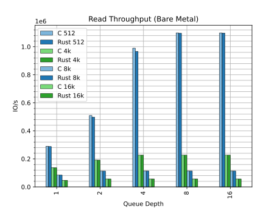
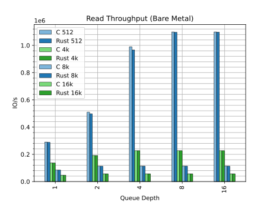

Rust for Linux
Rust for Linux is the project adding support for the Rust language to the Linux kernel.
This website is intended as a hub of links, documentation and resources related to the project.
The project
- Contact
- Contributing
- Rust kernel policy
- Branches
- Rust reference drivers
- Rust version policy
- Unstable features
- Backporting and stable/LTS releases
- Third-party crates
- Out-of-tree modules
- Industry and academia support
- Sponsors
Subprojects
Tools
Users — in mainline
- AMCC QT2025 PHY Driver
- Android Binder Driver
- ASIX PHY Driver
- DRM Panic QR code generator
- Nova GPU Driver
- Null Block Driver
- Tyr GPU Driver
Users — outside mainline
Links
Contact
Security
Issue tracking
Documentation
- Quick Start guide
- Kernel documentation (mainline)
- Kernel documentation (next)
- Rust code documentation (mainline)
- Rust code documentation (next)
- Out-of-tree module template
Main branches
Subtree branches
Patchwork
Conferences
- Kangrejos
- Linux Plumbers Conference (LPC)
- Rust MC at LPC 2025
- Rust MC at LPC 2024
- Rust MC at LPC 2023
- Rust MC at LPC 2022
LWN
Tools and toolchains
Other trees
Other resources
Contact
Mailing list
The rust-for-linux@vger.kernel.org mailing list is primarily meant for patch submission and reviewing, as well as announcements and technical discussions on mainline development:
Please read the Mailing list etiquette document if it is the first time you send an email to a Linux kernel mailing list.
For general questions, please use the Zulip chat instead.
Zulip chat
For chat, we use Zulip.
Please feel free to use it for general questions, discussion, help, feedback, etc.
Open Meeting
Everybody is welcome to join our Open Meeting.
It takes place once every kernel cycle, the first Wednesday after -rc1 is tagged, at 20:00 CET or CEST (i.e. CET at "summer time").
GitHub issue tracker
GitHub is used for issue reporting, tracking and discussion.
Please do not report security bugs in the GitHub issue tracker. Instead, please read the Security bugs page in the kernel documentation.
For general questions, please use the Zulip chat instead.
For other matters, please feel free to contact the maintainers via email.
Contributing
There are many ways to contribute to Rust for Linux. One way is to contribute to the kernel itself — the rest of this page focuses on that. But there are other ways as well:
-
In Rust:
-
Helping to stabilize unstable features the kernel requires.
-
Adding support for features we would like in the kernel: in the language, in the standard library, in the compiler, in
rustdoc, in Clippy, inbindgen... Please see the various "wanted features & bugfixes" lists for each topic.
-
-
Contributing to the Coccinelle for Rust project.
-
Contributing to the
rustc_codegen_gccproject, which will be used by the kernel for GCC builds. -
Contributing to the
gccrsproject, which eventually will provide a second toolchain for GCC builds. -
Improve support for Rust in
pahole.
The kernel development process
The Rust support is part of the Linux kernel, and thus contributing works the same way as for the latter. That implies, among other things:
-
A patch-based workflow is used.
-
Reviews take place in the different mailing lists of the kernel.
-
Contributions are signed under the Developer's Certificate of Origin.
To learn more about the kernel development process, please read the documentation under Documentation/process. In particular, please make sure to read submitting-patches.rst.
In addition, it may be a good idea to contribute a small cleanup or fix somewhere in the kernel (not necessarily to Rust code), in order to get accustomed to the patch-based workflow. From time to time we add "good first issues" to our GitHub issue tracker for that purpose.
Ways to contribute
There are many ways to contribute to the Rust support in the kernel:
-
Submitting changes, of course, whether it is new code or improvements to existing code. Please see the details below on this option.
-
Reviewing patches, especially if you have experience with unsafe Rust and have an eye to spot unsoundness issues or with Rust API design in general. Reviewers can get credited within commits messages via the
Reviewed-bytag. -
Testing patches. Like reviewing, running meaningful testing increases the confidence that the patch is OK. Testers can get credited within commits messages via the
Tested-bytag. -
Reporting issues you find. Reporters can get credited within commits messages via the
Reported-bytag. -
Suggesting improvements. Good ideas that end up being implemented can get credited within commit messages via the
Suggested-bytag. -
Helping others on Zulip. For instance, getting them started with the Rust support in the kernel.
Getting started with Rust kernel development
Please read the documentation under Documentation/rust. In particular, the Quick Start guide.
Reading the rest of this website is also recommended.
The Rust subsystem
The Rust subsystem takes care of the core Rust abstractions as well as the general infrastructure for Rust in the kernel. It is a bit special in that it potentially intersects with every other subsystem in the kernel, especially in the beginning of the Rust support in the kernel.
For this reason, early on, there are a few extra notes to have in mind when contributing Rust code to the kernel.
Submitting changes to existing code
All patches containing Rust code should be sent to both the maintainers/reviewers/mailing lists of the relevant kernel subsystem they touch as well as the Rust one.
This applies even if the files that the patch modifies are all under rust/ (e.g. currently all abstractions live under rust/, but the plan is to change this in the future as Rust grows in the kernel) and the files are referenced by the MAINTAINERS entry of the relevant subsystem. Scripts like scripts/get_maintainers.pl may not provide the complete list.
The goal with this procedure is that everybody interested in Rust can follow what is going on with Rust in the entire kernel in the early stages, to avoid duplicate work, and to make it easier for everybody to coordinate.
For instance, if a patch modifies rust/kernel/time.rs, then the patch should be sent to both "TIMEKEEPING" and "RUST".
Ideally, the maintainers of the particular subsystem will take the changes through their tree, instead of going through the Rust one.
Please make sure your code is properly documented, that the code compiles warning-free under CLIPPY=1, that the code documentation tests pass and that the code is formatted.
Submitting new abstractions and modules
For new abstractions and modules, and especially for those that require new kernel subsystems/maintainers to be involved, please follow the approach outlined here.
-
Kernel maintainers and developers interested in using Rust should take the lead in developing missing abstractions/modules for the subsystems they need.
-
Part of the work may be already done or in the process of being upstreamed, thus please first check the mailing list archive as well as the PRs submitted to GitHub. It is also a good idea to ask on our Zulip chat.
-
As early as possible, please get in touch with the maintainers of the relevant subsystem in order to make them aware of the work you are doing or planning to do. That way, they can give you input and feedback on the process. Please feel free to Cc the Rust maintainers too.
-
Consider whether a Rust reference driver could be a good idea to bootstrap Rust into the subsystem.
-
When you are getting closer to patch submission, please consider sending an RFC series first, especially if it is a major contribution, or if it is a long patch series, or if you require a lot of prerequisite patches (e.g. for abstractions of other subsystems) that are not yet upstreamed.
The RFC can be based on top of a branch placed somewhere else that contains the prerequisite patches, so that the RFC patches themselves do not cover those, and therefore is focused on the parts that the maintainers will eventually review.
This way, you can get early design feedback before the actual patch submission later, and the discussion is focused on the given subsystem (rather than the prerequisites).
-
In general, the kernel does not allow to integrate code without users, but exceptions can potentially be made for Rust code to simplify the upstreaming process early on. That is, upstreaming some dependencies first so that it is easier to upstream expected in-tree users later on. However, note that this is not meant to be a way to justify upstreaming APIs that do not have agreed upon in-tree users. In particular, out-of-tree modules do not constitute a user in this context.
Please contact the Rust maintainers for help, especially if you find yourself with a lot of dependencies or patches for unrelated subsystems.
Submit checklist addendum
The following items apply to every patch in a series. That is, in general, each commit should be clean, not just the end state.
-
Please keep the code Clippy-clean by compiling with
CLIPPY=1. -
Please format the code by running the
rustfmttarget. Please see the style guidelines as well. -
When submitting changes to Rust code documentation, please render them using the
rustdoctarget and ensure the result looks as expected. The Rust code documentation gets rendered at https://rust.docs.kernel.org. -
When submitting changes to tests, including
#[test]s, Kselftests and examples inside Rust code documentation (i.e. "doctests", which are transformed into KUnit tests), please test them. -
When submitting changes to the Rust folder of the kernel documentation (i.e.
Documentation/rust/), which are written in reStructuredText and handled by Sphinx, please render them (typically using thehtmldocstarget) to ensure there are no warnings and that the result looks as expected. The Rust kernel documentation gets rendered at https://docs.kernel.org/rust/. -
Ideally, please check your changes with both the latest stable Rust compiler as well as the minimum supported version (
scripts/min-tool-version.sh rustc), including Clippy. -
Please run your patch through the
scripts/checkpatch.plscript. In particular, the--codespelloption is useful to check patches for typos.
Key cycle dates
-
Patches can be sent anytime.
-
We aim to send early PRs to Linus, to have patches for at least a week in linux-next and to give patches at least a week of review time.
Therefore, in general, the last version of a patch series with new features (i.e. aimed at the next merge window) should arrive before -rc5.
Submitting patches
If you are using a CLI tool like git-send-email or b4, then you may find the following commands useful for generating the options needed for submitting patches to the Rust subsystem:
awk '/^RUST$/,/^$/' MAINTAINERS | grep '^M:' | cut -f2- | xargs -IP echo --to \'P\' \\
awk '/^RUST$/,/^$/' MAINTAINERS | grep '^[RL]:' | cut -f2- | xargs -IP echo --cc \'P\' \\
This list includes the maintainers (M:), reviewers (R:) and mailing list (L:) of the "RUST" subsystem in the MAINTAINERS file.
However, please keep in mind that this does not cover additional subsystems that you may need to submit your patches to, as explained in the other sections.
Rust kernel policy
There has been a fair amount of confusion about what the kernel policies around Rust are, who maintains what and so on.
This document tries to clarify some of these points with what, to the best of our knowledge, is the current status.
Like most things in the kernel, these points are not hard rules and can change over time depending on the situation and what key maintainers and the kernel community discuss.
How is Rust introduced in a subsystem?
Like for many other things in the kernel, it is up to each subsystem how they want to deal with Rust.
The goal has always been to get maintainers involved progressively, because the effort does not scale otherwise.
Therefore, different subsystems have taken different approaches so far:
-
Some subsystems prefer to actively drive the Rust effort themselves, taking patches, fixing issues, etc. This may allow them the chance to learn Rust in the process.
-
Some subsystems prefer to get a new co-maintainer, sub-maintainer, reviewer, etc. to split the workload, letting them take care of the Rust side. Some may want to do so in their existing
MAINTAINERSentry; others may prefer a new entry dedicated to that. Some may want to use the same trees to land the patches. Some may want PRs from their Rust sub-maintainer. And so on and so forth. -
Some subsystems may decide they do not want to have Rust code for the time being, typically for bandwidth reasons. This is fine and expected.
Now, in the Kernel Maintainers Summit 2022, we asked for flexibility when the time comes that a major user of Rust in the kernel requires key APIs for which the maintainer may not be able to maintain Rust abstractions for it. This is the needed counterpart to the ability of maintainers to decide whether they want to allow Rust or not.
Do kernel maintainers support Rust in the kernel?
Yes, there are key kernel maintainers that support Rust in the kernel.
Please see the quotes given by kernel maintainers for the FOSDEM 2025 Rust for Linux keynote, slides 45-85.
Who maintains Rust code in the kernel?
The usual kernel policy applies. That is, whoever is the listed maintainer.
The "RUST" subsystem maintains certain core facilities as well as some APIs that do not have other maintainers. However, it does not maintain all the Rust code in the kernel — it would not scale.
Nevertheless, the team can be approached for help if needed — indeed, the intention has always been to build a mixed team of people that could help across the kernel to bootstrap Rust.
Eventually, the "RUST" subsystem could also act as "fallback maintainers" for Rust code too, similar to how akpm serves as a last resort maintainer.
Who is responsible if a C change breaks a build with Rust enabled?
The usual kernel policy applies. So, by default, changes should not be introduced if they are known to break the build, including Rust.
However, exceptionally, for Rust, a subsystem may allow to temporarily break Rust code. The intention is to facilitate friendly adoption of Rust in a subsystem without introducing a burden to existing maintainers who may be working on urgent fixes for the C side. The breakage should nevertheless be fixed as soon as possible, ideally before the breakage reaches Linus.
For instance, this approach was chosen by the block layer — they called it "stage 1" in their Rust integration plan.
We believe this approach is reasonable as long as the kernel does not have way too many subsystems doing that (because otherwise it would be very hard to build e.g. linux-next).
Should maintainers treat Rust code up to the same standards?
Ideally, and eventually, yes. However, when they are starting out, not necessarily.
The intention is that maintainers are not pressured to reject Rust, even if they wanted to try it, just because they may feel they will not be able to provide timely fixes and so on the same way they do for C.
Thus, depending on the subsystem, Rust may be seen as a new thing, and new things can break. In fact, ideally it should be fun for maintainers to try Rust.
Didn't you promise Rust wouldn't be extra work for maintainers?
No, we did not. Since the very beginning, we acknowledged the costs and risks a second language introduces. However, we believe the advantages of introducing Rust in the Linux kernel outweigh those costs.
Please see the original RFC.
Years have passed, have you reevaluated the tradeoffs mentioned in the original RFC?
As years have passed, the advantages mentioned in the RFC have become more evident, and part of the initial costs have already been paid.
For instance, within the kernel, successful complex Rust drivers have been written and improvements to the C side were implemented. Outside the kernel, there is nowadays increased industry pressure to move to memory safe languages than when we started years ago.
On the costs side, a lot of the required setup work within the kernel is in place, most Rust language features we used were stabilized, Rust compiler features were implemented, other projects improved their support for Rust as well (e.g. bindgen, Coccinelle for Rust, pahole, GCC, rustc_codegen_gcc...), and so on.
Are duplicated C/Rust drivers allowed?
The usual kernel policy applies. So, by default, no.
However, subsystems may decide to allow it, temporarily, to get Rust bootstrapped — please see Rust reference drivers.
Is Rust for Linux driven by the "Rust community"?
No, the people involved around Rust for Linux come from different backgrounds and organizations. Some are kernel maintainers, some are Rust experts. Some are hobbyists, some are employees at large corporations.
In particular, it is not an effort driven by the Rust Project nor the Rust Foundation. In fact, Rust for Linux was founded by a Linux kernel maintainer as a hobby.
Are companies involved in Rust in the kernel?
Yes, at the time of writing, there are at least 6+ FTEs publicly working on Rust for Linux or its users across several major companies. Privately, there are more.
Please see our Industry and academia support page as well.
Branches
Main branches
Currently we maintain the following main branches. There are, of course, other trees that also land Rust code via their own trees. For the latest information, please check the MAINTAINERS file.
They are all part of linux-next.
rust-next
rust-next is the branch that contains new Rust features to be submitted during the next merge window of the Linux kernel. That is, it is the development branch of the "RUST" entry in the MAINTAINERS file.
Changes to this branch land via patches sent to the mailing list, or through pulls of one of the subtrees (please see below).
It is part of linux-next.
rust-fixes
rust-fixes is the branch that contains Rust fixes for the current cycle of the Linux kernel.
Changes to this branch land via patches sent to the mailing list.
It is part of linux-next.
Subtree branches
These are the branches of the Rust subtrees that land into mainline via the main rust-next branch.
Changes to these branches land via patches sent to the mailing list.
They are all part of linux-next. Fixes for these branches land through rust-fixes.
alloc-next
alloc-next is the branch for the "RUST [ALLOC]" entry and the "DMA MAPPING HELPERS DEVICE DRIVER API [RUST]" entry in the MAINTAINERS file.
pin-init-next
pin-init-next is the branch for the "RUST [PIN-INIT]" entry in the MAINTAINERS file.
timekeeping-next
timekeeping-next is the branch for the "DELAY, SLEEP, TIMEKEEPING, TIMERS [RUST]" entry in the MAINTAINERS file.
xarray-next
xarray-next is the branch for the "XARRAY API [RUST]" entry in the MAINTAINERS file.
Past branches
There are also other branches that are unmaintained, archived, deprecated, frozen or do not exist anymore in the repository. For historical details about these, please see our Past branches page.
Past branches
These branches are unmaintained, archived, deprecated, frozen or do not exist anymore in the repository. Historical details about them follow.
rust
rust was the original branch where development happened for two years before Rust support was merged into the kernel.
It contains most of the abstractions that the project worked on as a prototype/showcase. Some of those may eventually land upstream, others may be reworked with feedback from upstream, and a few may be dropped if unneeded.
The branch is now archived, thus no new changes are merged into it. While it may be deleted eventually, for the moment it is kept around since some of the code did not make it upstream and may be useful for others.
Similarly, its Rust code documentation (2023-03-13) is archived as well.
Changes to this branch landed via GitHub PRs. GitHub Actions was used as a pre-merge CI, compiling the kernel and booting it under QEMU for different toolchains, architectures and configurations. It also checked that some tests passed (e.g. loading sample modules, KUnit tests...) as well as building the PR under Clippy, building the docs, checking rustfmt, etc. KernelCI tests it. Finally, in the past, the Ksquirrel bot checked the PRs sent to it.
rust-dev
rust-dev was an experimental branch for integration purposes. It was a queue for patches that "looked good enough".
Its intended use cases were:
- Finding merge/apply conflicts as early as possible.
- Providing a common base for development that requires features that are not yet in mainline or
rust-next, i.e. giving early access to features. This may include Rust-related changes from other subsystems, but it was not intended to cover our topic branches. - Providing extra testing to patches by making them easily available to more developers.
This branch was intended to be updated/rebased frequently.
Topic branches (staging/*)
These branches were focused on a particular topic and were meant to enable collaboration on code that is targeted for upstreaming but has not reached mainline yet. The intention was to make it easy to request/add new ones.
Some of these branches may contain work-in-progress code (similar to staging trees) that may not be suitable for upstreaming or general usage yet. Please check the details of each branch.
Changes to these branches landed via GitHub PRs. Nevertheless, contributions should still follow the usual Linux kernel development process — see Contributing for details.
staging/dev
staging/dev was a branch intended to integrate the other topic branches (similar to the role of rust-dev for the main branches).
staging/rust-device
staging/rust-device was dedicated to device/driver-related abstractions.
The branch was kept in a compilable state (rebased regularly on top of rust-next or mainline). Fixes and features were welcome.
staging/rust-net
staging/rust-net was dedicated to networking-related abstractions.
The branch was kept in a compilable state (rebased regularly on top of rust-next or mainline). Fixes and features were welcome.
It was maintained by Trevor Gross and Valentin Obst. You could contact them through Zulip.
staging/rust-pci
staging/rust-pci was dedicated to PCI-related abstractions, which were used by e.g. the NVMe driver.
The branch was kept in a compilable state (rebased regularly on top of rust-next or mainline). Fixes and features were welcome.
Rust reference drivers
Some kernel subsystems maintainers are open to the idea of experimenting with Rust, but they may want to start simple with a driver they are familiar with. But such a driver would violate the "no duplicate drivers" rule.
Similarly, external people have expressed an interest in writing Rust drivers, but given the required abstractions are not there, they may decide to wait. But if nobody writes a first use case, the abstractions cannot be merged without breaking the "no code without an expected in-tree user" rule.
Rust reference drivers are a solution to these deadlocks: they are drivers that subsystem maintainers are allowed to introduce in their subsystem without dropping the existing C driver. This allows maintainers:
-
To bootstrap abstractions for new drivers, i.e. not the "duplicate"/"rewritten" one, but future new drivers that would use those abstractions; while avoiding breaking the "no dead code" rule.
-
To serve as a reference for existing C maintainers on how such drivers would look like in Rust, as "live" documentation, e.g. like how LWN featured a 1:1 comparison between a C and Rust driver. And it has to be buildable at all times.
-
To use all the in-tree kernel infrastructure and to prepare their subsystem for Rust over time, e.g. setting up tests and CI.
-
To learn over time, especially for subsystems that have several maintainers where not everybody may have time for it at a given moment. Reading Rust patches from time to time for APIs one is familiar with can help a lot.
-
And, most importantly, to evaluate if the effort is worth it for their subsystem. For instance, maintainers may ask themselves:
-
"How much can we write in safe code?"
-
"How many issues has the reference driver had over time vs. the C one? Did Rust help prevent some?"
-
"How hard is it to maintain the Rust side? Do we have enough resources in our subsystem?"
-
etc.
-
A Rust reference driver does not necessarily need to be considered a real driver, e.g. it could be behind EXPERT, be tagged (EXPERIMENTAL), staging...
The first driver that took advantage of this framework was drivers/net/phy/ax88796b_rust.rs, merged in v6.8:
config AX88796B_RUST_PHY
bool "Rust reference driver for Asix PHYs"
depends on RUST_PHYLIB_ABSTRACTIONS && AX88796B_PHY
help
Uses the Rust reference driver for Asix PHYs (ax88796b_rust.ko).
The features are equivalent. It supports the Asix Electronics PHY
found in the X-Surf 100 AX88796B package.
Rust version policy
Supported versions
The kernel documents the minimal requirements to compile it. Since v6.11, the kernel supports a minimum version of Rust, starting with Rust 1.78.0.
For the moment, we cannot guarantee newer Rust versions will always work due to the unstable features in use1. Removing the need for them is a priority of the project.
To ameliorate that, the kernel is now being build-tested in Rust's pre-merge CI. That is, every change that is attempting to land into the Rust compiler is tested against the kernel, and it is merged only if it passes. Similarly, the bindgen tool is also build-testing the kernel in their pre-merge CI.
Thus, with the pre-merge CIs in place, those projects hope to avoid unintentional changes to Rust and bindgen that break the kernel. This means that, in general, apart from intentional changes on their side (that we will need to workaround conditionally on our side), the upcoming Rust and bindgen versions should generally work. This applies to beta and nightly versions of Rust as well.
In addition, getting Linux to build on stable Rust has been a "flagship goal" of the Rust project for 2024H2 and 2025H1. We also have two ongoing goals for 2025H2: language and compiler.
To clarify, the Rust language is stable, i.e. it promises backwards compatibility, except for those unstable features.
Supported toolchains
The Rust versions currently supported should already be enough for kernel developers in distributions that provide recent Rust compilers routinely, such as:
- Arch Linux.
- Debian 13 (Trixie), Debian Testing and Debian Unstable (Sid).
- Fedora Linux.
- Gentoo Linux.
- Nix (unstable).
- openSUSE Slowroll and Tumbleweed.
- Ubuntu LTS (20.04, 22.04, 24.04) and non-LTS (interim).
In addition, we support the toolchains distributed by Rust, installed via rustup or the standalone installers.
Finally, slim and fast LLVM+Rust toolchains are provided at kernel.org.
Please see the Quick Start guide for details.
Minimum upgrade policy
We have not upgraded the initial minimum yet (Rust 1.78.0, released 2024-05-02).
Our current plan is to propose Debian Stable's Rust versions as the minimum supported versions to use.
For instance, Debian 13 (Trixie)'s Rust version is 1.85.0 (released 2025-02-20), thus we are aiming to have that one as the new minimum.
Unstable features
Introduction
The Rust language is stable, i.e. it promises backwards compatibility within the same edition, with a few exceptions, such as reserving the right to patch safety holes. The kernel currently uses Edition 2021.
On top of that, the kernel uses some Rust unstable features. These features can only be accessed by opting into them. They are typically used as a way to introduce new features into the language, library and toolchain to allow end users to experiment with them and provide feedback before committing to them.
"Unstable" in this context means the feature may change in future versions, i.e. backwards compatibility is not promised for those features. It does not imply that the features are broken. For instance, unstable features may be production-ready and ready for stabilization or they may be experimental, incomplete or internal to the compiler.
When unstable features are deemed mature enough, they may get promoted into stable Rust. In other cases, they may get dropped altogether. Some features are internal to the compiler or perma-unstable.
Usage in the kernel
The unstable features used (or needed, or expected to be needed) in the kernel are tracked at issue #2.
Most of the features are only allowed within the kernel crate, i.e. for abstractions. Elsewhere (e.g. drivers), only a minimal set is allowed (see the rust_allowed_features variable in scripts/Makefile.build).
Removing the need for unstable features is a priority in order to ensure the kernel can be built with future Rust compiler versions without major changes on the kernel side. To that end, we are working with upstream Rust to get the Linux kernel into stable Rust. On top of that, the kernel is build-tested in the pre-merge CI of the Rust and bindgen projects. Please see the Rust version policy page for more details.
Backporting and stable/LTS releases
The stable and longterm (LTS) kernel releases only receive fixes, and thus do not accept new features. Therefore, it is generally not possible to backport new Rust features or abstractions from mainline. However, exceptions may apply.
We do our best to maintain the existing Rust support in Linux v6.1 LTS, v6.6 LTS and v6.12 LTS:
-
Linux v6.1 LTS and v6.6 LTS have the Rust compiler version pinned, i.e. a single version of Rust works with each of those releases.
-
Linux v6.12 LTS is the first LTS that had a minimum supported Rust version, i.e. unpinned.
We will do our best to avoid having to establish a maximum Rust version for that LTS, i.e. to support future Rust releases. However, given the use of unstable features back then, we cannot guarantee it.
Older LTS releases
There has been some interest over time in backported Rust support for Linux v5.10 LTS and v5.15 LTS.
In general, maintaining an LTS branch, even if based on an official one, requires substantial effort and a long-term commitment, as it should be consistently supported until reaching its End of Life. If we were to consider it, there would need to be a strong demand and/or additional resources provided. If your company, organization or team would be interested, then please contact us.
There would be several points to consider:
-
The level of support and the security and scheduling implications.
-
Whether all new abstractions, drivers and overall features appearing in mainline are backported, and whether those that require extra backports on the C side to support them should be included.
-
Whether the Rust version policy would be different than the one in mainline, e.g. whether the Rust version would be fixed (like it is in older upstream LTS kernels).
Third-party crates
Introduction
Rust provides a package manager and build system called Cargo. Rust also provides crates.io, its default package registry. In userspace, all these form a solution that a lot of open-source Rust projects use.
Some of those open-source libraries are potentially usable in the kernel because they only depend on core (and possibly alloc) rather than std, or because they only provide macro facilities.
Thus it is natural to consider whether some of these libraries could be reused for the kernel.
Suitability of a crate
Even if a library only depends on core (and possibly alloc), it may still not be usable within the kernel for other reasons.
For instance, its license may be incompatible, its use of the Rust standard library alloc crate (if any) may not be easy to adapt to the kernel's alloc module, the kernel may only need a very small subset of what it supports (even if it supports configuring out some of its features), the kernel may already provide the same functionality on the C side (which could be abstracted), etc.
On top of that, the code of a crate may require some changes to be adapted for the kernel anyway. For instance, adding SPDX license identifiers, removing a dependency, tweaking some code, enabling an unstable feature, etc.
Moreover, new code arriving to the kernel should be maintained; and thus somebody needs to step up for that role.
Therefore, in general, whether a third-party crate is suitable for the kernel needs to be decided on a case-by-case basis.
Importing crates
The kernel currently integrates some dependencies by importing the files into its source tree, adapted as needed. In other words, they are not fetched/patched on demand. For instance, in the C side, some of the compression algorithms; in the Rust side, proc-macro2, quote and syn since v6.19; and in older kernel releases, our Rust alloc fork.
There have been discussions about potentially incorporating a system where crates/libraries are fetched dynamically given a list of crates, versions, hashes, etc.; however, it remains to be seen whether such a system would be preferred and accepted.
Supporting out-of-tree modules
The project is focused on getting features upstreamed, i.e. available for everybody. Therefore, if mainline does not support third-party crates and/or a system to fetch them dynamically, then it is unlikely it will be supported for out-of-tree modules.
Experiment
Experimental integration for a few popular crates has been provided for interested users, e.g. PR #1007 added support for proc-macro2, quote, syn, serde and serde_derive (syn and its dependencies have been integrated in mainline since v6.19).
Feedback
We are looking for feedback from other kernel developers, maintainers and companies on which third-party crates would be most useful to have in the kernel.
Out-of-tree modules
The Linux kernel supports building out-of-tree modules. Both C and Rust modules can be developed as out-of-tree ones, and we provide a basic template for an out-of-tree Linux kernel module written in Rust.
However, please note that the Rust for Linux project is part of the kernel and has always focused its efforts towards getting code into the mainline kernel.
In particular, this means that Rust internal APIs can be changed at any time, just like C ones, when the need arises. Similarly, code present at any point in our different branches is not intended to form a stable base for out-of-tree development.
In addition, patches submitted to the mailing list should generally focus on in-tree development efforts. In particular, Rust abstractions submitted upstream require in-tree users. Abstractions intended for out-of-tree users cannot be merged. Even if those abstractions may be obviously useful for future in-tree users, there needs to be an agreed upon in-tree user.
For these reasons and others, please consider submitting your use cases upstream — see the importance of getting code into the mainline.
Having said that, we understand that some module development is done out-of-tree and may not be possible to upstream. Even in those cases, if your company, organization or team has a use case for Rust, please contact us, since it is important to highlight those use cases early on in order to showcase the interest from industry and academia in Rust.
Industry and academia support
“Google supports and contributes directly to the Rust for Linux project. Our Android team is evaluating a new Binder implementation and considering other drivers where Rust could be adopted.”
— Google, 2021.
“Arm recognises the Rust value proposition and is actively working with the Rust community to improve Rust for Arm based systems. A good example is Arm’s RFC contribution to the Rust language which made Linux on 64-bit Arm systems a Tier-1 Rust supported platform.
Rustaceans at Arm are excited about the Rust for Linux initiative and look forward to assisting in this effort.”
— Arm, 2021-06-29.
“Microsoft's Linux Systems Group is interested in contributing to getting Rust into Linux kernel. Hopefully we will be able to submit select Hyper-V drivers written in Rust in the coming months.”
— Microsoft, 2021-06-29.
“There is interest in using Rust for kernel work that Red Hat is considering.”
— Red Hat, 2021-07-08.
“Rust for Linux is a key step towards reducing security-critical kernel bugs, and on the path towards our ultimate goal of making Linux free of security-critical bugs. We are using Rust in our OS research, and adoption is easier with an existing Rust in the Linux kernel framework in place.”
— Thomas Anderson, University of Washington, 2022-06-23.
“We are convinced that Rust is changing the landscape of system programming by applying the research done on programming languages in the last decades. We wanted to see how the language was able to help us write code we are really comfortable with thanks to the extensive static checking.”
— Esteban Blanc, Arthur Cohen and Martin Schmidt, LSE (Systems Research Laboratory) at EPITA (École pour l'informatique et les techniques avancées), 2022-06-23.
“Being able to use Rust in the Linux kernel is an incredible milestone on the road to a more secure future for the Internet and everything else that depends heavily on Linux.”
— ISRG's Prossimo Project, 2022-10-18.
“Samsung is actively engaged in supporting the integration of Rust code into the Linux Kernel. Recognizing the significant benefits that Rust brings to kernel and system software development, particularly in terms of enhancing security and reducing critical bugs, Samsung is committed to enabling kernel developers to write block layer device drivers using the Rust programming language. By embracing modern programming languages like Rust, Samsung aims to attract new talent to systems development and promote memory safety within the Linux storage stack.”
— Samsung, 2023-05-17.
“Cisco supports the inclusion and development of Rust in the Linux kernel as a way of eliminating memory safety bugs and vulnerabilities. We are developing a next-generation container filesystem in Rust and, to this end, we are contributing time, code, and the testing effort to the Rust for Linux project.”
— Cisco, 2023-09-14.
“Collabora feels privileged to partner with customers who envision Rust as an integral part of the Linux kernel's future. We are committed to supporting the integration of Rust into as many Linux subsystems as appropriate over the coming years. By doing so, this will enable our customers, and many more developers, to increase the reliability of their Linux kernel contributions. We extend our gratitude for the activities undertaken by the Rust for Linux Initiative.”
— Collabora, 2023-09-22.
“CDN77 builds most new projects in Rust. This leads to more secure code, fewer critical bugs, and a codebase that scales without breaking existing logic. We’re also testing Rust in the Linux kernel with promising results, and we fully support its inclusion.”
— CDN77, 2025-09-24.
If your company, organization, university or team is using or plans to use Rust for Linux and would like to release a statement, then please contact us. Thank you!
Sponsors
Prossimo project
Internet Security Research Group (ISRG), through their Prossimo project, supported Miguel Ojeda and Gary Guo to work on Rust for Linux, which was made possible with financial support from Google, Futurewei and Alpha-Omega.


“Our mission is to reduce financial, technological, and educational barriers to secure communication over the Internet.”
“Prossimo is an Internet Security Research Group (ISRG) project. Its goal is to improve the Internet's security-sensitive software infrastructure by addressing memory safety issues in C and C++ code via the use of memory safe languages.”


Zulip
Zulip sponsors free Zulip Cloud Standard hosting for Rust for Linux.

“Zulip is an open-source modern team chat app designed to keep both live and asynchronous conversations organized.”
klint
klint is a tool that allows to introduce extra static analysis passes ("lints") in Rust kernel code, leveraging the Rust compiler as a library. One of the first lints available validates that Rust code follows the kernel locking rules by tracking the preemption count at compile-time.
The main developer and maintainer is Gary Guo.
pin-init
pin-init is a solution to The Safe Pinned Initialization Problem. It provides safe and fallible initialization of pinned structs using in-place constructors.
The main developer and maintainer is Benno Lossin.
The Safe Pinned Initialization Problem
Introduction to Pinning
In the kernel many data structures are not allowed to change address, since there exist external pointers to them that would then be invalidated. Since this could cause memory errors, Rust has to somehow guarantee that this cannot happen in safe code. Luckily there already exists the Pin<P> wrapper type for arbitrary pointer types P. For simplicity we will look at P = Box<T>. Box<T> is a smart pointer that owns a T (a generic parameter) allocated on the heap. When a Box<T> is dropped (destroyed) then it automatically frees the memory.
Pin<Box<T>> behaves similar to Box<T>, it is also a smart pointer and allows you to have immutable access to the fields and functions of T. You can also store it just as easily, since it also has the same size as Box<T>.
One important difference compared to just Box<T> is that Pin prevents mutable access to the underlying Box<T> and thus makes it impossible to move the pointee. So users are unable to call e.g. mem::swap. This is of course a heavy restriction, so there exist unsafe functions that allow modification and access to &mut T and so called pin-projections to access fields of T. However, when using these functions, it is the caller's responsibility to uphold the pinning guarantee.
This guarantee also includes that the object is droped before the memory is deallocated or repurposed. At first glance, this requirement seems strange. But after this example it will hopefully seem very natural. Let's imagine that we want to design a Rust version of list_head1:
#![allow(unused)] fn main() { /// # Invariants /// /// `next` and `prev` always point to a valid `ListHead`. struct ListHead { next: *mut ListHead, prev: *mut ListHead, } }
Then we need to ensure that as long as an element is in a list, it will stay alive, since it would cause a UAF (use after free) otherwise. A simple way to achieve this, is to remove it from the list, when it gets dropped:
#![allow(unused)] fn main() { impl Drop for ListHead { fn drop(&mut self) { let prev = self.prev; let next = self.next; // SAFETY: By the invariant, these pointers are valid. unsafe { (*next).prev = prev; (*prev).next = next; } } } }
And this is the important bit, if we were to just deallocate/reuse the memory of a ListHead without dropping it first, by e.g. using ptr::write, then we are just begging for a UAF to happen.
Because the Box<T> smart pointer owns its memory, it cannot be used for a function which does not consume the value. For this reason the mutable reference &mut T is used. When dealing with Pin<Box<T>>, we cannot access &mut T. Instead we can access Pin<&mut T> which still upholds the pinning guarantee.
Adding Initialization into the mix
What does initialization have to do with pinning? In the first paragraph nothing suggested that there would be a connection. One important feature of Rust forces this connection. In Rust all values have to be initialized at all times. This is a problem for creating our ListHead the usual Rust way; a new() function that returns the object by value. Since we first need to know its address before we can initialize next and prev to point to itself.
Rust has a way around the "values are vaild at all times" problem: MaybeUninit<T> is a wrapper that explicitly allows uninitialized values. unsafe functions are then used to access the T once initialized. For our ListHead we could simply allocate a MaybeUninit<ListHead> and then write its address using raw pointers into next and prev. However, as already said above, in Rust the normal way of creating an object is to return it by value. We cannot do this for the ListHead, since that would move it and invalidate its pointers. The alternative of allocating it on the heap, i.e. returning a Pin<Box<ListHead>> also does not work, since this list should be part of a bigger struct.
This is the reason why Rust-for-Linux chose a two-function approach:
#![allow(unused)] fn main() { impl ListHead { /// Creates a new [`ListHead`]. /// /// # Safety /// /// Before using this [`ListHead`] the caller has to call [`ListHead::init`]. unsafe fn new() -> Self { Self { next: ptr::null_mut(), prev: ptr::null_mut(), } } /// Initializes this [`ListHead`]. /// /// # Safety /// /// This function is only called once. unsafe fn init(self: Pin<&mut Self>) { // SAFETY: We do not move `self`. let this: &mut Self = unsafe { self.get_unchecked_mut() }; let ptr: *mut ListHead = this; unsafe { (*ptr).prev = ptr; (*ptr).next = ptr; } } } }
This approach avoids having to allocate and lets the user decide the memory location of the ListHead. It also ensures that a ListHead will be pinned in memory, since the self type of init is Pin<&mut Self>. Both functions have to be marked unsafe, since the safety preconditions cannot be enforced by the compiler. We also have to use two functions, since after a call to new the caller will have to pin the value in memory prior to calling init.
The biggest problem with this approach is that it exclusively relies on the programmer to ensure safety. It is very easy to forget such an init call when you have a struct with multiple fields that require this treatment. This problem is exacerbated by the fact that this API propagates to all structs that contain a ListHead:
#![allow(unused)] fn main() { struct DoubleList { list_a: ListHead, list_b: ListHead, } impl DoubleList { /// # Safety /// /// Before using this [`DoubleList`] the caller has to call [`DoubleList::init`]. unsafe fn new() -> Self { Self { // SAFETY: We call `ListHead::init` in our own initializer. list_a: unsafe { ListHead::new() }, // SAFETY: We call `ListHead::init` in our own initializer. list_b: unsafe { ListHead::new() }, } } /// # Safety /// /// This function is only called once. unsafe fn init(self: Pin<&mut Self>) { // SAFETY: We structurally pin `list_a`. let list_a = unsafe { self.map_unchecked_mut(|s| &mut s.list_a) }; // SAFETY: Our function is only called once. unsafe { ListHead::init(list_a) }; // SAFETY: We structurally pin `list_b`. let list_b = unsafe { self.map_unchecked_mut(|s| &mut s.list_b) }; // SAFETY: Our function is only called once. unsafe { ListHead::init(list_b) }; } } }
So not only the kernel crate developers have to cope with this API, but everyone who dares to have a Mutex<T> in their struct, or use a struct that transitively contains a Mutex<T>.
Pin Complications
The previous example also shows a different, but related issue: pin-projections. These are how we access the fields of pinned structs. And because one can break the pinning guarantee the map_unchecked_mut function has to be unsafe. The requirement for them is consistency, you are only allowed to either structurally pin a field, so you allow the access of Pin<&mut Struct> -> Pin<&mut Field>, or you do not structurally pin the field, i.e. allowing Pin<&mut Struct> -> &mut Field. As long as only one of those options is done, the pinning guarantee is upheld.
In userland Rust this problem is addressed by using the pin-project crate. This crate generates the pin-projections from the struct definition:
#![allow(unused)] fn main() { #[pin_project] struct DoubleList { #[pin] list_a: ListHead, #[pin] list_b: ListHead, } }
Now both fields are structurally pinned and can be safely accessed.
This crate cannot be used in the kernel, since it relies on syn -- the de facto Rust code parsing library for proc-macros. The problem with including syn in the kernel is that it consists of over 50k lines of code.
There is also the pin-project-lite crate that achieves almost the same thing without a proc-macro. It has 5k lines of code and contains a very complex macro that would require further modification to serve this purpose, which would be hard to maintain.
These reasons ultimately resulted in not using any of the existing approaches. The problem of pin projections also prompted the creation of the field projection RFC.
If you now want to view how to use the API, then take a look at the extensive documentation.
Further Resources on Pinning
- Rust documentation: https://doc.rust-lang.org/core/pin/index.html
- Pinning and its problems outlined in the context of futures: https://fasterthanli.me/articles/pin-and-suffering
- Pinning in Rust -- Kangrejos Presentation https://kangrejos.com Slides: https://kangrejos.com/Pinning%20in%20Rust.pdf
The example presented here, glosses over some very important details. The next and prev
fields of the ListHead struct should actually be placed in Cell<T>s to allow modification
through &ListHead, since we cannot have multiple &mut ListHeads at the same time. And we
need to have multiple when iterating through a list. Also, ListHead should contain a
PhantomPinned field to ensure it cannot be unpinned.
Arc in the Linux kernel
This document outlines how the Linux kernel is using the unstable features arbitrary_self_types and dispatch_from_dyn/unsize.
But first, an introduction to the custom types that the kernel is using.
The kernel's custom Arc
The Linux kernel needs to use a custom implementation of Arc. The most important reason is that we need to use the kernel's refcount_t type for the atomic instructions on the refcount. There are two reasons for this:
-
The standard Rust
Arcwill callaborton overflow. This is not acceptable in the kernel; instead we want to saturate the count when it hitsisize::MAX. This effectively leaks theArc. -
Using Rust atomics raises various issues with the memory model. We are using the LKMM rather than the usual C++ model, which means that all atomic operations should be implemented with an
asm!block or similar that matches what kernel C does, rather than an LLVM intrinsic.
We also make a few other changes to our Arc:
-
We need to interact with a lot of different C types that need to be pinned, so our custom
Arcis implicitly pinned. -
We do not need weak references, so our refcount can be half the size.
Our Arc also comes with two utility types:
-
ArcBorrow<'a, T>. Similar to&'a Arc<T>, but only one level of indirection. -
UniqueArc<T>. Mutable access to anArc. Used to split allocation and initialization into two steps, which is important since we cannot allocate memory while holding a spinlock.
Intrusive linked lists
The kernel uses a lot of intrusive linked lists, which are extremely rare in userspace Rust. This is a consequence of a unique limitation in kernel code related to memory allocations:
-
Memory allocations are always fallible and failures must be handled gracefully.
-
When you are in an atomic context (e.g. when holding a spinlock), you are not allowed to allocate memory at all.
(Technically there are special ways to allocate memory in atomic context, but it should be used sparingly.)
These limitations greatly affect how we design code in the kernel. There are some functions where having a failure path is not acceptable (e.g. destroying something), and other places where we cannot allocate at all. This means that we need data structures that do not need to allocate. Or where the allocation and insert steps are separate. Imagine a map protected by a spinlock. How do you implement that if insert simply cannot allocate memory?
One answer to this is to use a linked list (and similar, e.g. a red/black tree can work with the same idea). The value you wish to insert takes this form:
#![allow(unused)] fn main() { struct MyValue { // In practice, these are wrapped into one field using a struct. next: *mut MyValue, prev: *mut MyValue, foo: Foo, bar: Bar, } }
Then, given an Arc<MyValue>, you can insert that into a linked list without having to allocate memory. The only thing you have to do is adjust the next/prev pointers.
Additionally, there are a bunch of C APIs that work using the same principle, so we are also forced into this pattern when we want to use those C APIs. For example, this includes the workqueue which stores the list of tasks to run in a linked list.
The ListArc type
You may have noticed one problem with the above design: The value we are inserting is an Arc<MyValue>, so how can you get mutable access to next/prev? And how do you know that it's not already in a linked list? What about data races — someone could attempt to push (two clones of) the same Arc<MyValue> to two different linked lists, which would constitute a data race on the next/prev fields.
You could solve these issues by adding an AtomicBool for keeping track of whether it is in a list, but this isn't great. We really want to avoid the AtomicBool.
Our answer is another custom smart pointer type: ListArc. The ListArc type is just a newtype wrapper around Arc with the invariant that each MyStruct has at most one ListArc reference. However, unlike UniqueArc, you are allowed to have Arc references to a value that also has an ListArc. This way, the ListArc reference can be given exclusive access to the next/prev fields, which is enough to design a safe API for intrusive linked lists containing reference counted values.
One consequence of this is that (unlike Arc), we are using a smart pointer where ownership of the pointer is extremely important. You cannot just clone a ListArc.
Our ListArc type also has a second generic parameter, which allows you to have multiple next/prev pairs. So ListArc<T, 1> has exclusive access to the first next/prev pair, and ListArc<T, 2> has exclusive access to the second such pair. This means that you can have multiple list arcs as long as their parameter is different (one per value of the extra generic parameter).
next/prev pointers and dynamic dispatch
We want to be able to use linked lists with dyn Trait. However, the offset of the next/prev fields needs to be uniform no matter what the concrete type is. To do that, we use a wrapper type:
#![allow(unused)] fn main() { struct Wrapper<T: ?Sized> { next: *mut Wrapper<T>, prev: *mut Wrapper<T>, value: T, } }
And the actual type ends up being Arc<Wrapper<dyn Trait>>.
Arbitrary self types
We wish to use arbitrary self types in various places. Some examples:
-
Many methods need to call
self.clone()and get a newArcto the current struct. To do that, we needself: &Arc<T>orself: ArcBorrow<'_, T>. -
We often need to do
linked_list.push(self). To do that, we needself: ListArc<T>.
For the struct methods, we could work around this by not using self parameters, and calling MyStruct::foo(my_arc). However, we also need to do these things in traits where we perform dynamic dispatch on the value. For example:
#![allow(unused)] fn main() { trait WorkItem { fn run1(self: ListArc<Self>); // or, actually: fn run2(self: ListArc<Wrapper<Self>>); } }
This use-case needs both arbitrary self types and the dynamic dispatch feature mentioned in the next section. Arbitrary self types are needed because dynamic dispatch is only performed on self parameters.
Dynamic dispatch
We wish to use these linked lists to store dynamic trait objects. This is used for a "todo list" of events that need to be delivered to userspace. There are many different event types, and we use a trait object to store a queue of them.
There is a need to have both Arc<MyStruct> and Arc<dyn MyTrait> references to the same object.
All of the smart pointers that we want to use dynamic dispatch with are newtype wrappers around either NonNull or other smart pointers (e.g. ListArc is a wrapper around Arc). They may also have a PhantomData field. These requirements match what is listed on DispatchFromDyn.
A related feature is the Unsize trait. Most likely, adding the DispatchFromDyn trait depends on also having Unsize, so we need it for that reason. But we do not otherwise need the Unsize trait.
C-to-Rust dynamic dispatch
The kernel also has some other uses of dynamic dispatch that trait objects don't help with. Mainly, these are cases where C defines a vtable using a struct with function pointers. Here, we must match the vtable layout that C dictates, so we will manually implement the vtable unsafely to handle these cases. We still use a trait for providing a safe API to these things, but the implementation needs only generics and not trait objects.
However, for Rust-to-Rust dynamic dispatch, trait objects appear to satisfy our needs. As long as we are able to use them with our smart pointers, that is.
Ksquirrel
Ksquirrel was a GitHub bot that helped newcomers to the kernel get accustomed to the kernel requirements for submissions (e.g. checking that commit messages were properly signed and formatted). It was also useful as a double-check for maintainers that they did not forget to check those requirements.
We may bring it back for mailing list submissions!
Coccinelle for Rust
Coccinelle is a tool for automatic program matching and transformation that was originally developed for making large scale changes to the Linux kernel source code (ie, C code). Matches and transformations are driven by user-specific transformation rules having the form of abstracted patches, referred to as semantic patches. As the Linux kernel, and systems software more generally, is starting to adopt Rust, we are developing Coccinelle for Rust, to make the power of Coccinelle available to Rust codebases.
Examples
Changing a method call sequence in the Rust implementation:
@@
expression tcx, arg;
@@
- tcx.type_of(arg)
+ tcx.bound_type_of(arg).subst_identity()
Replace Generic Bound with Impl Trait:
@@
identifier f, P, p;
type T1, T2;
@@
- f<P: T1>(p: P) -> T2
+ f(p: impl T1) -> T2
{ ... }
Current status
Coccinelle for Rust is currently a prototype. It relies on Rust Analyzer for parsing and rustfmt for pretty printing. It mainly supports matching and transformation of expressions and types, but reasoning about control flow is not yet supported.
Availability
LWN article from Kangregos 2024
A recent talk about Coccinelle for Rust
Feedback
Coccinelle for Rust relies on user feedback for its improvement. Several bugs have been fixed thanks to helpful feedback from users. If you are interested in using Coccinelle for Rust please feel free to reach out to us at Contact with your questions or feedback.
Support
We would like to thank Collabora for supporting the development of Coccinelle for Rust.
Contact
- Julia Lawall: Julia.Lawall@inria.fr
- Tathagata Roy: tathagata.roy1278@gmail.com
rustc_codegen_gcc
rustc_codegen_gcc is a GCC ahead-of-time codegen for rustc, meaning that it can be loaded by the existing rustc frontend, but benefits from GCC by having more architectures supported and having access to GCC’s optimizations.
Rust for Linux can be compiled with rustc_codegen_gcc which allows to have a GCC-compiled Linux kernel with Rust kernel modules compiled with GCC as well.
Blog with updates about the progress of the GCC codegen.
Building rustc_codegen_gcc and the sysroot
Follow the build instructions here.
Building Rust for Linux
Follow the Rust for Linux Quick Start instructions with a few changes as explained below.
First, disable MITIGATION_RETPOLINE in menuconfig at: Mitigations for CPU vulnerabilities -> Avoid speculative indirect branches in kernel.
Since the GCC codegen might not work on every nightly version (that should soon be fixed now that we run some tests in the Rust CI), we're going to use the same nightly version as the GCC codegen instead of using the version recommended by Rust for Linux:
rustup override set nightly-2023-10-21 # Adjust to the version used by the GCC codegen.
Now, you need to set some variables to build Rust for Linux with the GCC codegen (do not forget to adjust your path to rustc_codegen_gcc):
make -j20 KRUSTFLAGS="-Zcodegen-backend=/path/to/rustc_codegen_gcc/target/debug/librustc_codegen_gcc.so" \
HOSTRUSTFLAGS="-Zcodegen-backend=/path/to/rustc_codegen_gcc/target/debug/librustc_codegen_gcc.so \
--sysroot /path/to/rustc_codegen_gcc/build_sysroot/sysroot -Clto=no"
CI
We have a repo that runs some tests of Rust for Linux compiled with rustc_codegen_gcc.
Troubleshooting
If that didn't build the Rust object files, run make menuconfig again and check if the "Rust support" is available.
It could be that you have RUST_IS_AVAILABLE [=n].
In that case, run make rustavailable with the KRUSTFLAGS you used above.
That should give you the correct error, which could be one of those:
libgccjit.so.0: cannot open shared object file: No such file or directory- In this case, make sure you set
LD_LIBRARY_PATHandLIBRARY_PATH.
- In this case, make sure you set
Source code for the 'core' standard library could not be found- In this case, make sure you used a recent enough version of
rustc_codegen_gcc(c6bc7ecd65046ee502118664f42637ca318cdfb5 or more recent should be good) that copies the source of the sysroot at the correct location.
- In this case, make sure you used a recent enough version of
Contact
Please contact Antoni Boucher (antoyo) on Matrix or post a message on Zulip.
gccrs
gccrs is an alternative compiler for the Rust
programming language, developed from the ground up for the
GNU Compiler Collection (GCC) project.
While gccrs is not yet able to compile Rust code, it is progressing fast — we are hoping we will be able to compile the Rust 1.49 core library in 2025 and the standard library with the GCC 16.1 release.
When core compiles properly, we will begin catching up to the Rust version used by Rust-for-Linux — in the hopes of being useful quickly!
You can follow the project's progress on our blog.
References
AMCC QT2025 PHY Driver
The Rust AMCC QT2025 driver is for the Applied Micro Circuits Corporation (AMCC) QT2025 PHY (Physical Layer) device. This driver facilitates communication between the operating system and the QT2025 hardware, ensuring proper network functionality.
The driver was merged into Linux kernel version v6.12-rc1 along with the improvements to the PHY abstraction that provides safe APIs for PHY drivers.
Both the Rust QT2025 driver and the MAC driver for Tehuti Networks' TN40xx chips have been tested using the Edimax EN-9320SFP+ 10G network adapter.
Android Binder Driver
This project is an effort to rewrite Android's Binder kernel driver in Rust.
The driver was merged into Linux kernel version v6.18-rc1.
Motivation
Binder is one of the most security and performance critical components of Android. Android isolates apps from each other and the system by assigning each app a unique user ID (UID). This is called "application sandboxing", and is a fundamental tenet of the Android Platform Security Model.
The majority of inter-process communication (IPC) on Android goes through Binder. Thus, memory unsafety vulnerabilities are especially critical when they happen in the Binder driver.
Maintenance
The Rust driver was originally authored by Wedson Almeida Filho, and is now maintained by Alice Ryhl. The ongoing work will be part of the Android Open Source Project.
ASIX PHY Driver
The Rust ASIX driver is for ASIX Electronics' Ethernet PHY (Physical Layer) devices. This driver facilitates communication between the operating system and the ASIX AX887xx chips, ensuring proper network functionality.
The driver is the first Rust driver merged into the Linux kernel. It was merged into Linux kernel version v6.8-rc1 along with a PHY abstraction that provides safe APIs for PHY drivers.
The ASIX driver is a Rust reference driver. It serves as a guide for developers. ASIX PHY chips are widely used in affordable 10/100M USB Ethernet adapters from various vendors.
DRM Panic QR code generator
This is a simple QR code generator, to display the panic data as a QR code. It is specific to the DRM panic use case, and supports only some parts of the QR code specification.
Why a QR code in a panic screen?
Kernel panic traces are usually displayed on the screen, but then it's hard to copy and paste them to a bug report, so that a developer can take a look, and fix the bug.
As QR code are now widespread, using that allows to easily copy and paste the panic traces in a bug report, which makes debugging much easier for both the user and the kernel developer.
The QR code has a better pixel density than text, that means you can put more debug data into a QR code, than you can see as text only on a standard monitor.
Why Rust?
This project was written in rust, because memory safety is critical in a panic handler.
The QR code encoder is self-contained and only uses the provided memory buffer, so there is no need to add complex bindings, and it was easy to merge it in the kernel.
For this particular case, I found the Rust code to be cleaner, and easier to read than the C equivalent, even if I'm much more experienced in C.
Availability
The code was merged into Linux kernel version v6.12-rc1. Arch Linux will enable it soon in its kernel.
Side projects
An example web frontend to decode the panic data from the QR code: https://github.com/kdj0c/panic_report.
A few samples of a panic screen with a QR code are available here: https://github.com/kdj0c/panic_report/issues/1.
You can test the same code in a standalone rust app (outside the kernel): https://gitlab.com/kdj0c/qr_panic.
I try to keep it up-to-date with the latest Linux kernel.
Maintenance
The main author of the QR code generator is Jocelyn Falempe <jfalempe@redhat.com>, with help from the Rust for Linux community.
Nova GPU Driver
Nova is a driver for GSP (GPU system processor) based Nvidia GPUs. It is intended to become the successor of Nouveau as the mainline driver for Nvidia (GSP) GPUs in Linux.
It will support all Nvidia GPUs beginning with the GeForce RTX20 (Turing family) series and newer.
Contact
Available communication channels are:
- The mailing list: nouveau@lists.freedesktop.org
- IRC: #nouveau on OFTC
- Zulip Chat
Resources
The parts that are already in mainline Linux can be found in
drivers/gpu/nova-core/ and drivers/gpu/drm/nova/
Development currently takes place in the drm-rust-next tree alongside other DRM Rust drivers, for easier collaboration and integration. There's also a standalone repo for the Nova driver, but it's currently unused.
Background
Why a new driver?
Nouveau was, for the most part, designed for pre-GSP hardware. The driver exists since ~2009 and its authors back in the day had to reverse engineer a lot about the hardware's internals, resulting in a relatively difficult to maintain codebase.
Moreover, Nouveau's maintainers concluded that a new driver, exclusively for GSP hardware, would allow for significantly simplifying the driver design: Most of the hardware internals that Nouveau had to reverse engineer reside in the GSP firmware. Hereby, the GSP takes up the role of a hardware abstraction layer which communicates with the host kernel through IPC. Thereby, a lot of the stack's complexity is moved from the GPU driver into the GSP firmware.
This, in consequence, enables better maintainability. Another chance with a new driver is to obtain active community participation from the very beginning.
Why write it in Rust?
Besides Rust's built-in ownership and lifetime model, its powerful type system allows us to avoid a large portion of a whole class of bugs (i.e. memory safety bugs).
Additionally, the same features allow us to model APIs in a way that also certain logic errors can be caught at compile time already.
Especially GPU drivers can benefit a lot from Rust's ownership and lifetime model, given their highly concurrent and asynchronous design.
Since Nova is a new driver, written from scratch, it is an opportunity to try to leverage the advantages of Rust and obtain a more reliable, maintainable driver.
Architecture
The overall GPU driver is split into two parts:
- "Nova-Core", living in
drivers/gpu/nova-core/. Nova-Core implements the fundamental interaction with the hardware (through PCI etc.) and, notably, boots up the GSP and interacts with it through a command queue. - "Nova-DRM" (the official name is actually just "Nova", but to avoid
confusion developers usually call it "Nova-DRM"), living in
drivers/gpu/drm/nova/. This is the actual graphics driver, implementing all the typical DRM interfaces for userspace.
This split architecture allows for different drivers building on top of the abstraction layer provided by Nova-Core. Besides Nova-DRM, for instance, a VFIO driver to virtualize the GPU can be built on top of Nova-Core. Through this driver Nova-Core can be used to instruct the GPU's firmware to spawn new PCI virtual functions (through SR-IOV), representing virtual GPUs. Those virtual functions (or vGPUs) can be used by virtual machines. Such a virtual machine running Linux may run Nova-Core and Nova-DRM as conventional GPU drivers on top of this vGPU.
A main advantage of this design is that the amount of software running on the host (where crashes would be far more fatal than inside of a VM) is kept small, which contributes to stability.
It is also possible to use Nova-Core + Nova-DRM on one physical machine (not depicted in the diagram) in order to expose a DRM compatible uAPI to the host userspace.
For more details about vGPUs, take a look at Zhi's announcement email.
Status and Contributing
The necessary Rust infrastructure has been progressing a lot. Current work now focuses more on the actual driver. In case you want to contribute, take a look at the NOVA TODO List.
Don't hesitate reaching out on the aforementioned community channels.
Null Block Driver
The Rust null block driver rnull is an effort to implement a drop in
replacement for null_blk in Rust.
A null block driver is a good opportunity to evaluate Rust bindings for the block layer. It is a small and simple driver and thus should be simple to reason about. Further, the null block driver is not usually deployed in production environments. Thus, it should be fairly straight forward to review, and any potential issues are not going to bring down any production workloads.
Being small and simple, the null block driver is a good place to introduce the Linux kernel storage community to Rust. This will help prepare the community for future Rust projects and facilitate a better maintenance process for these projects.
Statistics from the
commit log of the C null_blk
driver
(before
move)
show that the C null block driver has had a significant amount of memory safety
related problems in the past. 41% of fixes merged for the C null block driver
are fixes for memory safety issues. This makes the null block driver a good
candidate for rewriting in Rust.
The driver is implemented entirely in safe Rust, with all unsafe code fully contained in the abstractions that wrap the C APIs.
Please note that the performance measurements on this page might be misleading due to the results not being normally distributed. This analysis has more details. We observe that issue is resovled for v6.14-rc5, but we are monitoring the situation going forward.
Features
Implemented features:
blk-mqsupport- Direct completion
- SoftIRQ completion
- Timer completion
- Read and write requests
- Optional memory backing
- Bio-based submission
- NUMA support
- Block size configuration
- Multiple devices
- Dynamic device creation/destruction
- Queue count configuration
- Per node hctx
- Queue depth configuration
- Discard operation support
- Cache emulation
- Bandwidth throttling
- IO scheduler configuration
- Blocking submission mode
- Shared tags configuration (for >1 device)
- Bad block simulation
Features available in the C null_blk driver that are currently not implemented
in this work:
- Zoned storage support
- Poll queues
Resources
6.18-rc5, Rebase (rnull-v6.18-rc5)
Changes from rnull-v6.17.7:
- Add bandwidth throttling
- Add blocking queue mode
- Add shared tags support
- Add queue depth configuration option
Performance
Setup
- AMD Ryzen 5 7600
- 32 GB 4800 MT/s DDR5 on one channel
- 1x Samsung 990 Pro 1TB (PCIe 4.0 x4 16 GT/S)
- NixOS 24.11
Results
- Plot shows
(mean_iops_r - mean_iops_c) / mean_iops_c - 40 samples for each configuration
- Difference of means modeled with t-distribution
- P95 confidence intervals

Sample Distribution
- C left bounded by blue line.
- Rust right bounded by orange line.

6.17 Rebase (rnull-v6.17.7)
Changes from rnull-v6.16:
- Add discard support
- Add no_sched support
- Add badblocks emulation
- Add volatile cache emulation
Performance
Setup
- AMD Ryzen 5 7600
- 32 GB 4800 MT/s DDR5 on one channel
- 1x Samsung 990 Pro 1TB (PCIe 4.0 x4 16 GT/S)
- NixOS 24.11
Results
- Plot shows
(mean_iops_r - mean_iops_c) / mean_iops_c - 40 samples for each configuration
- Difference of means modeled with t-distribution
- P95 confidence intervals

Sample Distribution
- C left bounded by blue line.
- Rust right bounded by orange line.

6.16 Rebase (rnull-v6.16)
Changes from rnull-v6.15:
- No changes
Performance
Setup
- AMD Ryzen 5 7600
- 32 GB 4800 MT/s DDR5 on one channel
- 1x Samsung 990 Pro 1TB (PCIe 4.0 x4 16 GT/S)
- NixOS 24.11
Results
- Plot shows
(mean_iops_r - mean_iops_c) / mean_iops_c - 40 samples for each configuration
- Difference of means modeled with t-distribution
- P95 confidence intervals

Sample Distribution
- C left bounded by blue line.
- Rust right bounded by orange line.

6.15 Rebase (rnull-v6.15)
Changes from rnull-v6.14:
- No changes
Performance
Setup
- AMD Ryzen 5 7600
- 32 GB 4800 MT/s DDR5 on one channel
- 1x Samsung 990 Pro 1TB (PCIe 4.0 x4 16 GT/S)
- NixOS 24.11
Results
- Plot shows
(mean_iops_r - mean_iops_c) / mean_iops_c - 40 samples for each configuration
- Difference of means modeled with t-distribution
- P95 confidence intervals
Sample Distribution
- C left bounded by blue line.
- Rust right bounded by orange line.
6.14-rc5 Rebase (rnull-v6.14-rc5)
Changes from rnull-v6.13:
- Change reference counting scheme for
Request. - Move
rnulldriver to separate directory. - Rename
RawWritertoBufferWriterand move it. - Enable configuration of
rnullviaconfigfs.- Enable dynamic createion/destruction of devices via
configfs.
- Enable dynamic createion/destruction of devices via
- Use
Ownedfor rust managedPageobjects. - Change segment iterator to prevent concurrent mutable access to pages.
- Use
GFP_NOIOflag for backing rnull pages. - Add
user_per_node_hctxrnull config option. - Add NUMA home node rnull config option.
- Add submit queue count rnull config option.
- Fix a bug where unwritten bytes were not zeroed on read.
- Properly handle IO requests that are not equal in size to one block.
Performance
Setup
- AMD Ryzen 5 7600
- 32 GB 4800 MT/s DDR5 on one channel
- 1x Samsung 990 Pro 1TB (PCIe 4.0 x4 16 GT/S)
- NixOS 24.11
Results
- Plot shows
(mean_iops_r - mean_iops_c) / mean_iops_c - 40 samples for each configuration
- Difference of means modeled with t-distribution
- P95 confidence intervals
6.13 Rebase (rnull-v6.13)
Changes from rnull-v6.12:
- None
Performance
Setup
- AMD Ryzen 5 7600
- 32 GB 4800 MT/s DDR5 on one channel
- 1x Samsung 990 Pro 1TB (PCIe 4.0 x4 16 GT/S)
- NixOS 24.05
Results
- Plot shows
(mean_iops_r - mean_iops_c) / mean_iops_c - 40 samples for each configuration
- Difference of means modeled with t-distribution
- P95 confidence intervals
6.12 Rebase (rnull-v6.12)
Changes from rnull-v6.12-rc2:
- None
Performance
Setup
- AMD Ryzen 5 7600
- 32 GB 4800 MT/s DDR5 on one channel
- 1x Samsung 990 Pro 1TB (PCIe 4.0 x4 16 GT/S)
- NixOS 24.05
Results
- Plot shows
(mean_iops_r - mean_iops_c) / mean_iops_c - 40 samples for each configuration
- Difference of means modeled with t-distribution
- P95 confidence intervals

6.12-rc2 Rebase (rnull-v6.12-rc2)
Changes from rnull-v6.11:
- Make
QueueDatareferences pinned.
Performance
Setup
- AMD Ryzen 5 7600
- 32 GB 4800 MT/s DDR5 on one channel
- 1x Samsung 990 Pro 1TB (PCIe 4.0 x4 16 GT/S)
- NixOS 24.05
Results
- Plot shows
(mean_iops_r - mean_iops_c) / mean_iops_c - 40 samples for each configuration
- Difference of means modeled with t-distribution
- P95 confidence intervals

6.11 Rebase (rnull-v6.11)
Changes from rnull-v6.10:
- None.
Performance
Setup
- AMD Ryzen 5 7600
- 32 GB 4800 MT/s DDR5 on one channel
- 1x Samsung 990 Pro 1TB (PCIe 4.0 x4 16 GT/S)
- NixOS 24.05
Results
- Plot shows
(mean_iops_r - mean_iops_c) / mean_iops_c - 40 samples for each configuration
- Difference of means modeled with t-distribution
- P95 confidence intervals

6.11-rc2 Rebase (rnull-v6.11-rc2)
Changes from rnull-v6.10:
- Base abstractions merged upstream 🥳
- Use atomic queue limits C API for setting queue limits.
Performance
Setup
- AMD Ryzen 5 7600
- 32 GB 4800 MT/s DDR5 on one channel
- 1x Samsung 990 Pro 1TB (PCIe 4.0 x4 16 GT/S)
- NixOS 24.05
Results
- Plot shows
(mean_iops_r - mean_iops_c) / mean_iops_c - 40 samples for each configuration
- Difference of means modeled with t-distribution
- P95 confidence intervals

6.10 Rebase (rnull-v6.10)
Changes from rnull-v6.10-rc3:
- None
Performance
Setup
- AMD Ryzen 5 7600
- 32 GB 4800 MT/s DDR5 on one channel
- 1x Samsung 990 Pro 1TB (PCIe 4.0 x4 16 GT/S)
- NixOS 24.05
Results
- Plot shows
(mean_iops_r - mean_iops_c) / mean_iops_c - 40 samples for each configuration
- Difference of means modeled with t-distribution
- P95 confidence intervals

6.10-rc3 Rebase (rnull-v6.10-rc3)
Changes from rnull-v6.9:
- Add
ForeignBorrowed. - Move
GenDiskto a builder pattern instead of typestate pattern. - Move block size validation from driver to abstractions.
- Pin
NullBlkModuel. - Refactor
Request::try_set_end. - Rewrite atomic functions in terms of
corelibrary functions. - Fix a bug in timer completions where an offset was not calculated correctly.
- Refactor
TagSetinitialization in terms ofcore::mem::zeroed()instead ofOpaque::try_ffi_init
Performance
Setup
- AMD Ryzen 5 7600
- 32 GB 4800 MT/s DDR5 on one channel
- 1x Samsung 990 Pro 1TB (PCIe 4.0 x4 16 GT/S)
- NixOS 24.05
Results
- Plot shows
(mean_iops_r - mean_iops_c) / mean_iops_c - 40 samples for each configuration
- Difference of means modeled with t-distribution
- P95 confidence intervals
6.9 Rebase (rnull-v6.9)
Changes from rnull-v6.8:
- Do not rely on C refcounting of
Request - Use
ARefto trackRequestlifetime - Use
Pageinstead ofFolioto track memory for memory backed mode - Use typestate pattern to track state of
GenDisk - Panic when requests cannot be completed
- Remove associated type
RequestDataInitand use return position impl trait instead - Call
Request::startimplicitly - Split helper function C file
Performance
Setup
- AMD Ryzen 5 7600
- 32 GB 4800 MT/s DDR5 on one channel
- 1x Samsung 990 Pro 1TB (PCIe 4.0 x4 16 GT/S)
- NixOS 24.05
Results
- Plot shows
(mean_iops_r - mean_iops_c) / mean_iops_c - 5 samples for each configuration
- Difference of means modeled with t-distribution
- P95 confidence intervals
6.8 Rebase (rnull-v6.8)
Changes from rnull-v6.8-rc6:
- Slight refactoring of patch order
Performance
Setup
- 12th Gen Intel(R) Core(TM) i5-12600
- 32 GB DRAM
- Debian Bullseye userspace
Results
- Plot shows
(mean_iops_r - mean_iops_c) / mean_iops_c - 5 samples for each configuration
- Difference of means modeled with t-distribution
- P95 confidence intervals

6.8-rc6 Rebase (rnull-v6.8-rc6)
Changes from rnull-6.8:
- Change lock alignment mechanics
- Apply reference counting to
Request - Drop some inline directives
Performance
Setup
- 12th Gen Intel(R) Core(TM) i5-12600
- 32 GB DRAM
- Debian Bullseye userspace
Results
- Plot shows
(mean_iops_r - mean_iops_c) / mean_iops_c - 5 samples for each configuration
- Difference of means modeled with t-distribution
- P95 confidence intervals
6.7 Rebase (rnull-6.7)
Changes from null_blk-6.6:
- Move to
Foliofor memory backing instead ofPage - Move to
XArrayfor memory backing instead ofRaddixTree
Performance
Setup
- 12th Gen Intel(R) Core(TM) i5-12600
- 32 GB DRAM
- Debian Bullseye userspace
Results
- Plot shows
(mean_iops_r - mean_iops_c) / mean_iops_c - 40 samples
- Difference of means modeled with t-distribution
- P95 confidence intervals

Performance September 2023 (null_blk-6.6)
Setup
- 12th Gen Intel(R) Core(TM) i5-12600
- 32 GB DRAM
- 1x INTEL MEMPEK1W016GA (PCIe 3.0 x2)
- Debian Bullseye userspace
Results
- Plot shows
(mean_iops_r - mean_iops_c) / mean_iops_c - 40 samples
- Difference of means modeled with t-distribution
- P95 confidence intervals

Performance September 2023
Setup
- 12th Gen Intel(R) Core(TM) i5-12600
- 32 GB DRAM
- 1x INTEL MEMPEK1W016GA (PCIe 3.0 x2)
- Debian Bullseye userspace
Results
In most cases there is less than 2% difference between the Rust and C drivers.


Contact
Please contact Andreas Hindborg through Zulip.
Tyr GPU Driver
What is Tyr?
Tyr is a new Rust-based DRM driver for CSF-based Arm Mali GPUs. It is a port of Panthor — a driver written in C for the same hardware — and written as a joint effort between Collabora, Arm and Google engineers.
Tyr aims to eventually implement the same userspace API offered by Panthor for compatibility reasons, so that it can be used as a drop-in replacement in our Vulkan driver, called PanVK. In any case, we foresee Panthor being used — and of course supported — for a relatively long time, as it is a mature driver with a large adoption in the ecosystem. It will probably take a couple of years for Tyr to fully pick up.
Where is Tyr developed?
Tyr is developed both upstream and downstream.
Upstream
The initial skeleton of the Tyr driver is now upstream. Submissions against
the upstream Tyr driver should go to the dri-devel
and rust-for-linux mailing lists. If the
submission is larger and/or needs to be pre-reviewed, open a merge request
against the
tyr-for-upstream
branch in the panfrost/linux
repository.
Downstream
A more complete implementation of the Tyr driver is also available in the
tyr-dev branch.
Make submissions against the downstream Tyr driver by opening a merge request
against tyr-dev. It's expected that tyr-dev will be significantly
refactored before upstreaming.
This split is unfortunately necessary as we do not have the required infrastructure in upstream yet, although our plan is to eventually migrate to an upstream-only development model once this changes.
We go into more details about why we chose to develop Tyr this way on our series of blog posts at Collabora's blog. Anyone willing to get acquainted with Mali's open source stack should refer to that, as we will be covering the whole infrastructure from a simple Vulkan application to the actual GPU hardware in Mali's CSF architecture. We will also cover the various components needed to write a driver, as well as the status of the abstractions needed to interact with them from Rust code.
As it currently stands, our downstream branch can be used to test the abstractions that are still being developed. It makes sure that we can write a functional driver with the abstractions that are currently being proposed.
What is the current status of the driver?
The current upstream driver can power up the GPU and probe the device on an
RK3588 system-on-chip. This lets us read a few sections of ROM in the GPU,
which in turn lets us provide this information to userspace by means of a
DRM_IOCTL_PANTHOR_DEV_QUERY call.
This is all that can be done for now in upstream code, at least until the Micro Controller Unit can be made to work.
Our downstream branch (tyr-dev) provides a full, working prototype that can run GNOME, Weston, and full-screen 3D games like SuperTuxKart: see Racing karts on a Rust GPU kernel driver.
Can I try it out?
Anyone with a RK3588 SoC can test Tyr, but the driver is not capable of replacing Panthor yet. A good candidate device is Radxa's ROCK 5B Single Board Computer.
A good starting point is to use the Tyr driver to run the Panthor IGT
tests.
While only a subset of the tests pass on the upstream code for the reasons
highlighted above, they should all pass if run on tyr-dev.
Note that Mali GPUs are found in a vast array of devices, and that we will support more hardware as we progress in the implementation.
Contributing
Tyr is open-source software, and as such, anyone interested in its development can check our issue board. We will be posting good starting tasks at a future point.
To work on any given task, assign it to yourself and follow up with a merge
request against tyr-for-upstream (for patches targeting the upstream driver)
or tyr-dev (for work in the downstream staging branch).
Please also write the IGT tests needed to ensure that your code works.
Happy hacking!
Android ashmem
ashmem (Anonymous Shared Memory Subsystem for Android) is a new shared memory allocator, similar to POSIX SHM but with different behavior and sporting a simpler file-based API.
It is, in theory, a good memory allocator for low-memory devices, because it can discard shared memory units when under memory pressure.
Apple AGX GPU driver
As part of the Asahi Linux project, the Apple AGX GPU driver has been implemented in Rust for the Linux kernel, along with creating DRM bindings and associated userspace pieces.
The driver lives here. The current development team is:
- Alyssa Rosenzweig is writing the OpenGL driver and compiler.
- Asahi Lina is writing the kernel driver and helping with OpenGL.
- Dougall Johnson is reverse-engineering the instruction set with Alyssa.
- Ella Stanforth is working on a Vulkan driver.
References
NVMe Driver
The Rust NVMe driver is an effort to implement a PCI NVMe driver in safe Rust for use in the Linux Kernel. The purpose of the driver is to provide a vehicle for development of safe Rust abstractions and to prove feasibility of Rust as an implementation language for high performance device drivers.
The Linux Rust NVMe driver lives
here.
This branch is routinely rebased on upstream Linux releases. Please be aware
that the rnvme branch is force pushed without notice. The version based on the
deprecated rust branch is available
here.
The Rust NVMe driver was originally authored by Wedson Almeida Filho and is now maintained by Andreas Hindborg (Samsung).
The driver is not currently suitable for general use.
Resources
6.15 Rebase Performance (rnvme-v6.15)
Setup
- AMD Ryzen 5 7600
- 32 GB 4800 MT/s DDR5 on one channel
- 1x Samsung 990 Pro 1TB (PCIe 4.0 x4 16 GT/S)
- NixOS 24.11
Results
- 40 samples
- Difference of means modeled with t-distribution
- P95 confidence intervals

The graph shows where C is IO/s for the C driver and R is IO/s for the Rust driver. Thus, negative means the C driver is faster while positive means the Rust driver is faster.
6.14-rc5 Rebase Performance (rnvme-v6.14-rc5)
Setup
- AMD Ryzen 5 7600
- 32 GB 4800 MT/s DDR5 on one channel
- 1x Samsung 990 Pro 1TB (PCIe 4.0 x4 16 GT/S)
- NixOS 24.11
Results
- 40 samples
- Difference of means modeled with t-distribution
- P95 confidence intervals


The graph shows where C is IO/s for the C driver and R is IO/s for the Rust driver. Thus, negative means the C driver is faster while positive means the Rust driver is faster.
6.13 Rebase Performance (rnvme-v6.13)
Setup
- AMD Ryzen 5 7600
- 32 GB 4800 MT/s DDR5 on one channel
- 1x Samsung 990 Pro 1TB (PCIe 4.0 x4 16 GT/S)
- NixOS 24.11
Results
- 40 samples
- Difference of means modeled with t-distribution
- P95 confidence intervals
The graph shows where C is IO/s for the C driver and R is IO/s for the Rust driver. Thus, negative means the C driver is faster while positive means the Rust driver is faster.
6.12 Rebase Performance (rnvme-v6.12)
Setup
- AMD Ryzen 5 7600
- 32 GB 4800 MT/s DDR5 on one channel
- 1x Samsung 990 Pro 1TB (PCIe 4.0 x4 16 GT/S)
- NixOS 24.04
Results
- 40 samples
- Difference of means modeled with t-distribution
- P95 confidence intervals

The graph shows where C is IO/s for the C driver and R is IO/s for the Rust driver. Thus, negative means the C driver is faster while positive means the Rust driver is faster.
6.12-rc2 Rebase Performance (rnvme-v6.12-rc2)
Setup
- AMD Ryzen 5 7600
- 32 GB 4800 MT/s DDR5 on one channel
- 1x Samsung 990 Pro 1TB (PCIe 4.0 x4 16 GT/S)
- NixOS 24.05
Results
- 40 samples
- Difference of means modeled with t-distribution
- P95 confidence intervals

The graph shows where C is IO/s for the C driver and R is IO/s for the Rust driver. Thus, negative means the C driver is faster while positive means the Rust driver is faster.
6.11 Rebase Performance (rnvme-v6.11)
Setup
- AMD Ryzen 5 7600
- 32 GB 4800 MT/s DDR5 on one channel
- 1x Samsung 990 Pro 1TB (PCIe 4.0 x4 16 GT/S)
- NixOS 24.05
Results
- 40 samples
- Difference of means modeled with t-distribution
- P95 confidence intervals

The graph shows where C is IO/s for the C driver and R is IO/s for the Rust driver. Thus, negative means the C driver is faster while positive means the Rust driver is faster.
6.11-rc2 Rebase Performance (rnvme-v6.11-rc2)
Setup
- AMD Ryzen 5 7600
- 32 GB 4800 MT/s DDR5 on one channel
- 1x Samsung 990 Pro 1TB (PCIe 4.0 x4 16 GT/S)
- NixOS 24.05
Results
- 40 samples
- Difference of means modeled with t-distribution
- P95 confidence intervals

The graph shows where C is IO/s for the C driver and R is IO/s for the Rust driver. Thus, negative means the C driver is faster while positive means the Rust driver is faster.
6.10 Rebase Performance (rnvme-v6.10)
Setup
- AMD Ryzen 5 7600
- 32 GB 4800 MT/s DDR5 on one channel
- 1x Samsung 990 Pro 1TB (PCIe 4.0 x4 16 GT/S)
- NixOS 24.05
Results
- 40 samples
- Difference of means modeled with t-distribution
- P95 confidence intervals

The graph shows where C is IO/s for the C driver and R is IO/s for the Rust driver. Thus, negative means the C driver is faster while positive means the Rust driver is faster.
6.10-rc5 Rebase Performance (rnvme-v6.10-rc5)
Setup
- AMD Ryzen 5 7600
- 32 GB 4800 MT/s DDR5 on one channel
- 1x Samsung 990 Pro 1TB (PCIe 4.0 x4 16 GT/S)
- NixOS 24.05
Results
- 40 samples
- Difference of means modeled with t-distribution
- P95 confidence intervals

The graph shows where C is IO/s for the C driver and R is IO/s for the Rust driver. Thus, negative means the C driver is faster while positive means the Rust driver is faster.
6.9 Rebase Performance (rnvme-v6.9)
Setup
- AMD Ryzen 5 7600
- 32 GB 4800 MT/s DDR5 on one channel
- 1x Samsung 990 Pro 1TB (PCIe 4.0 x4 16 GT/S)
- NixOS 24.05
Results
- 40 samples
- Difference of means modeled with t-distribution
- P95 confidence intervals
The graph shows where C is IO/s for the C driver and R is IO/s for the Rust driver. Thus, negative means the C driver is faster while positive means the Rust driver is faster.
6.8 Rebase Performance (rnvme-v6.8)
Setup
- AMD Ryzen 5 7600
- 32 GB 4800 MT/s DDR5 on one channel
- 1x Samsung 990 Pro 1TB (PCIe 4.0 x4 16 GT/S)
- NixOS 23.11
Results
- 40 samples
- Difference of means modeled with t-distribution
- P95 confidence intervals


The graph shows where C is IO/s for the C driver and R is IO/s for the Rust driver. Thus, negative means the C driver is faster while positive means the Rust driver is faster.
6.7 Rebase Performance (nvme-6.7)
Setup
- 12th Gen Intel(R) Core(TM) i5-12600
- 32 GB DRAM
- 1x INTEL MEMPEK1W016GA (PCIe 3.0 x2)
- Debian Bullseye userspace
- LTO results are enabled by a build system patch (a hack) that was not yet published.
Results
- 30 samples
- Difference of means modeled with t-distribution
- P99 confidence intervals

Difference Relative
Plot shows (mean_iops_r - mean_iops_c) / mean_iops_c'

Performance November 2023 (nvme-6.6)
Setup
- 12th Gen Intel(R) Core(TM) i5-12600
- 32 GB DRAM
- 1x INTEL MEMPEK1W016GA (PCIe 3.0 x2)
- Debian Bullseye userspace
- LTO results are enabled by a build system patch (a hack) that was not yet published.
Results
- 30 samples
- Difference of means modeled with t-distribution
- P99 confidence intervals
Difference
Difference Relative
Plot shows (mean_iops_r - mean_iops_c) / mean_iops_c'
Performance September 2023
The driver was
rebased
on top of
rust-next
PR for 6.6 in September 2023.
Setup
- 12th Gen Intel(R) Core(TM) i5-12600
- 32 GB DRAM
- 1x INTEL MEMPEK1W016GA (PCIe 3.0 x2)
- Debian Bullseye userspace
Results
 

Performance January 2023
Performance evaluation as of January 2023.
Setup
- Dell PowerEdge R6525
- 1 CPU socket populated - EPYC 7313, 16 cores
- 128 GB DRAM
- 3x P5800x 16GT/s x4 7.88 GB/s (PCIe 4)
- Debian bullseye (linux 5.19.0+)
Results


Analysis
For 4 KiB block size, the Rust NVMe driver performs similar to the C driver. For this configuration the target drive is bandwidth limited.
For 512 B block size, the C driver outperforms the Rust driver by up to 6%. In this configuration the drive is not bandwidth limited, but the benchmark becomes compute limited. The Rust driver has a higher overhead and thus performs worse.
Work Items
- Remove all unsafe code from the driver
- Support device removal
- Verify functionality by executing
blktestsandxfstestsin CI - Add sys-fs nodes to allow use of
nvme-cliwith Rust NVMe driver - Support more kernel configurations by deferring initialization to a task queue
- Improve performance of Rust NVMe driver
Contact
Please contact Andreas Hindborg through Zulip.
PuzzleFS filesystem driver
PuzzleFS is a container filesystem designed to address the limitations of the existing OCI format. The main goals of the project are reduced duplication, reproducible image builds, direct mounting support and memory safety guarantees, some inspired by the OCIv2 design document.
Reduced duplication is achieved using the content defined chunking algorithm FastCDC. This implementation allows chunks to be shared among layers. Building a new layer starting from an existing one allows reusing most of the chunks.
Another goal of the project is reproducible image builds, which is achieved by defining a canonical representation of the image format. Direct mounting support is a key feature of puzzlefs and, together with fs-verity, it provides data integrity.
Lastly, memory safety is critical to puzzlefs, leading to the decision to implement it in Rust. Another goal is to share the same code between user space and kernel space in order to provide one secure implementation.
Resources
- PuzzleFS main repository
- PuzzleFS kernel branch
- Issue tracking the development of the kernel driver
- Talk at Open Source Summit Europe
- Kangrejos slides
- LWN article
Maintenance
The PuzzleFS driver is maintained by Ariel Miculas. Contact him at amiculas@cisco.com or through Zulip.